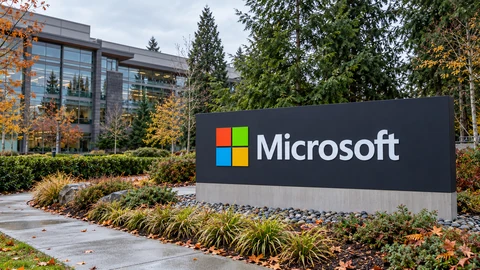
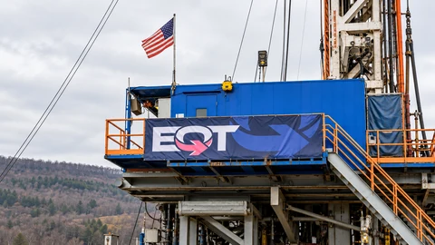
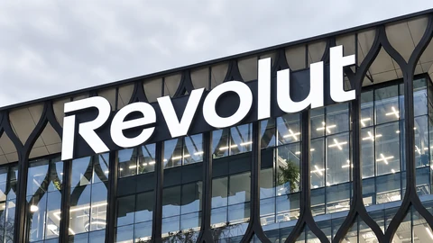
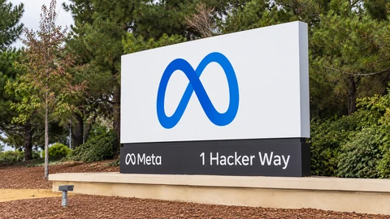
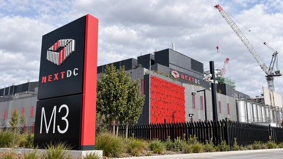

Financial news, market analysis and technology
Top Story
Market Analysis View all →

Market Analysis
Microsoft Offers Buyouts to About 60,000 Workers as It Reshapes Its Workforce
The voluntary offer covers selected teams in four countries. Eligibility reaches roughly 27% of the workforce, but actual departures remain unknown.
Market Analysis
Brazil ETF Sinks in Premarket Trading as Lula Win Upends Investors’ Election Bets
EWZ tumbled in U.S. premarket trading after Lula’s election win, while currency futures also fell as investors unwound bets on a right-wing victory.

Market Analysis
EQT Agrees to Buy Range Resources in a Roughly $13 Billion Stock Deal
The gas producers would form a company worth over $50 billion including debt; Range shareholders would receive 0.987 EQT shares for each share.

Market Analysis
Revolut Enters UK Personal Lending, Putting Its Banking Ambitions to a Credit Test
The digital bank is rolling out £2,000–£25,000 unsecured loans, moving beyond payments into a business where repayment quality determines returns.
Tech & AI View all →
Tech & AI
Anthropic Opens Its Books for an IPO, Revealing Surging Sales and Heavy AI Costs
The Claude maker filed publicly for a Nasdaq listing under ANT. Its financial disclosures separate rapid growth from operating costs and a large noncash charge.

Tech & AI
Meta Plans Up to $95 Billion in Equity Financing for Its AI Expansion
Meta launched roughly $35 billion of offerings and outlined another $60 billion of share sales to fund AI, raising questions about timing and dilution.
Tech & AI
Tata Communications Plans Up to $450 Million for India’s AI Fiber Network
The communications provider plans roughly 10,000 km of new fiber linking data-center hubs, adding connectivity to India’s AI infrastructure buildout.

Tech & AI
Data-Center Operator NEXTDC Cuts CEO Incentives After Melbourne Power Delay
A board shake-up follows a grid delay that disrupted NEXTDC’s revenue outlook, showing why contracted data-center demand still needs usable power.
Crypto View all →
Crypto
U.S. Bank Regulator Urges Community Banks Into Stablecoins as Licensing Deadline Nears
The OCC is encouraging smaller lenders to explore payment tokens, while its official implementation page says applications and waiver requests are not yet open.
Crypto
Bitcoin Retests $80,000 as Fed Week Opens With Investors Cutting Risk
Bitcoin recovered an early dip below $80,000 as traders weighed AI-market worries, recent ETF withdrawals and Wednesday’s Federal Reserve decision.
Crypto
Aviva Investors Launches Tokenized Sterling Fund Class on XRP Ledger
Aviva seeded the new fund share class with £50 million; the launch adds blockchain access to an existing sterling money-market portfolio.

Crypto
Bloom Trading Bot Promises Repayment After Reported Wallet Drains
Reports trace about 9,408 SOL to a suspected drainer while Bloom says it will reimburse confirmed losses; the cause and final scope remain unresolved.
News Feed